أهلاً بك في بوابتك
هذا دليلك خطوة بخطوة. هنشرح لك كل صفحة بكلام بسيط: إيش وظيفتها، وإيش بتستفيد منها. مفيش تقنيات معقّدة — كله واضح ومريح.
١ الصفحة الرئيسية
أول صفحة تشوفها لما تدخل. ملخّص سريع لكل اللي صار على موقعك في آخر شهر — بدون ما تدخل في تفاصيل.
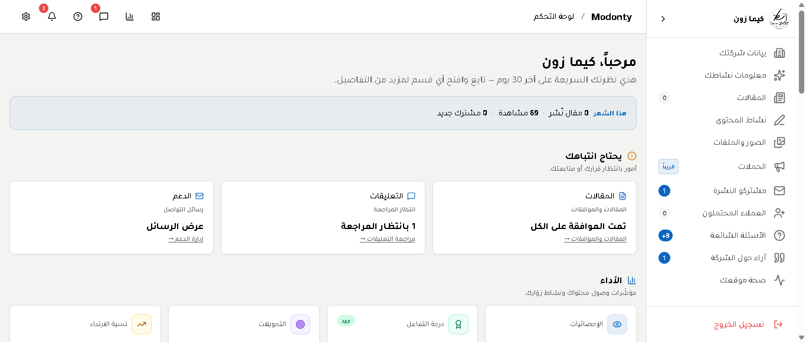
- ١اسم شركتك في الأعلىعشان تتأكد إنك داخل على حسابك الصح.
- ٢أرقام شهرككم مقال انتشر، كم واحد شاف موقعك، كم واحد اشترك جديد.
- ٣تنبيهات تستنّاكلو فيه تعليق محتاج موافقتك أو رسالة عميل محتاجة رد — هتطلع لك هنا.
٢ كيف تدخل
سهلة. رابطك وبياناتك وصلوك من فريقنا في رسالة واتساب. تسجل دخول مرة واحدة بس وخلاص.
- ١افتح المتصفح واكتب:
console.modonty.com - ٢إيميلك وكلمة المرورهم نفس اللي وصلوك من مودونتي. انسخ والصق علشان ما تكتب غلط.
- ٣اضغط "دخول"وخلاص. ما بتحتاج تسجّل دخول كل مرة — البوابة بتفتكر إنك أنت.
٣ الجولة السريعة
خليني أوريك أين الأشياء قبل ما نبدأ. شغلتين بس لازم تعرفهم: القائمة الكبيرة على اليمين، والأدوات السريعة على اليسار فوق.
- ١القائمة الرئيسية (يمين)كل صفحاتك المهمة هنا: شركتك، مقالاتك، صورك، إحصائياتك. اضغط على أي اسم وتنقلك له.
- ٢الأدوات السريعة (يسار فوق)أيقونات صغيرة للحاجات اللي بتفتحها كثير: إعدادات حسابك، رسائل الدعم، تعليقات، أسئلة. الرقم الأحمر يقول لك "فيه شي جديد".
٤ ابدأ من هنا — عبّي بيانات شركتك
ده ملف شركتك الكامل. كل ما عبّيت بيانات أكثر، كل ما عرفك جوجل أحسن، وظهرت قدّام عملاء أكثر بدون ما تدفع إعلانات. خصصها ٢٠ دقيقة مرة واحدة وخلاص.
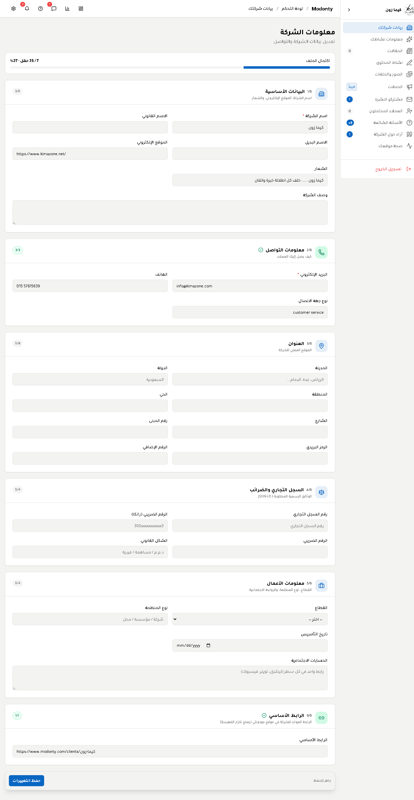
- ١شريط أزرق فوقيوريك كم عبّيت من بياناتك. هدفك تخلي الشريط كامل.
- ٢الصفحة مقسّمة لـ ٦ أجزاء: اسم شركتك، طرق التواصل، عنوانك، سجلك التجاري، معلومات عن نشاطك، ورابطك. لا تضغط نفسك — عبّي اللي تعرفه دلوقتي وارجع للباقي بعدين.
- ٣زر "حفظ التغييرات"تحت الصفحة. اضغطه كل ما تخلّص جزء.
٥ خبّرنا عن نشاطك
احنا بنكتب لك مقالات. عشان نكتب حاجة عميلك يحبّها فعلاً، لازم نعرف أنت بتعمل إيش وعميلك مين. هنا تكتب الإجابات وفريقنا بيقراها.
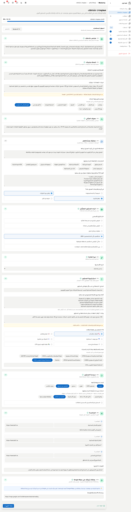
- ١وصف مختصرإيش نشاطك بكلمتين، وفي إيش متخصّص.
- ٢مين عميلك المثاليالزبون اللي تتمنى يدخل عليك كل يوم. وصفه: عمره، اهتماماته، إيش يحب يسمع.
- ٣روابطك الاجتماعية + مدنك + ساعات شغلككل ده بيظهر للزائر في صفحتك.
٦ مقالاتك
كل المقالات اللي بنكتبها لك بتظهر هنا. ما بننشر شي إلا بعد ما تشوفه وتوافق. ده موقعك ومسؤوليتك — احنا بس بنساعد.
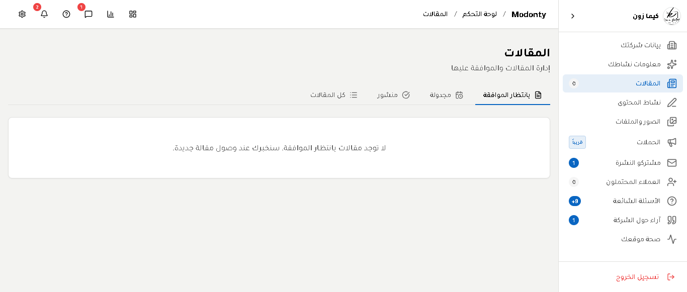
- ١٤ أزرار فوق: بانتظار الموافقة (محتاج ردك) · مجدولة (متفق على نشرها لاحقاً) · منشور (موجودة فعلاً على موقعك) · الكل (مرّة وحدة).
- ٢افتح المقالتقرا العنوان والمحتوى والصور — لو عاجبك اضغط "موافق"، لو محتاج تعديل اكتب لنا إيش تبي يتغير.
٧ كم مقال باقي ليك الشهر ده
باقتك فيها عدد معيّن من المقالات في الشهر (مثلاً ٨ مقالات). هنا تشوف كم استخدمت وكم باقي ومتى يبدأ شهرك الجديد.
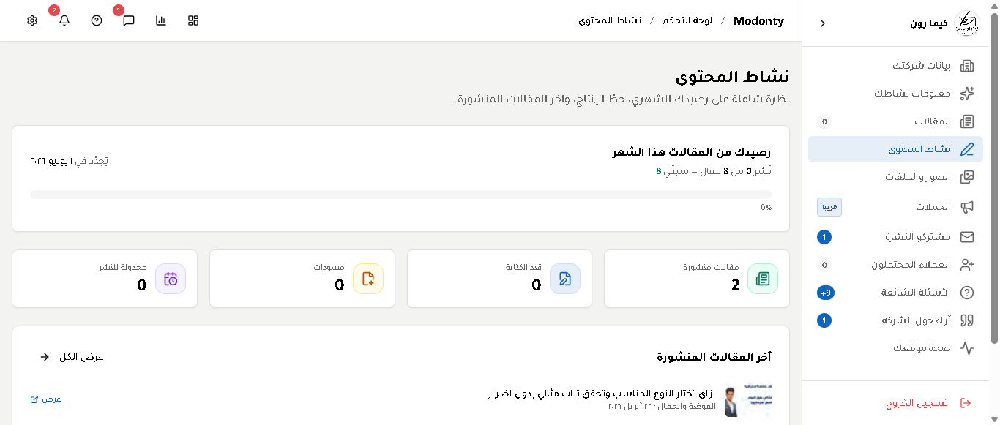
- ١الشريط الكبير فوقكم استخدمت من باقتك. لما يخلص بنخبّرك ولو محتاج تكبير الباقة.
- ٢٤ كروت ملوّنة: منشور (موجود على موقعك) · قيد الكتابة (فريقنا بيشتغل عليه) · مسودات (محفوظة بس ما خلصت) · مجدولة (هتنشر تلقائي في يوم محدد).
٨ الصور
كل صور شركتك ومقالاتك في معرض واحد. تقدر تشوف كل صورة، تعرف متى انرفعت، وفي أي مقال متستخدمة.
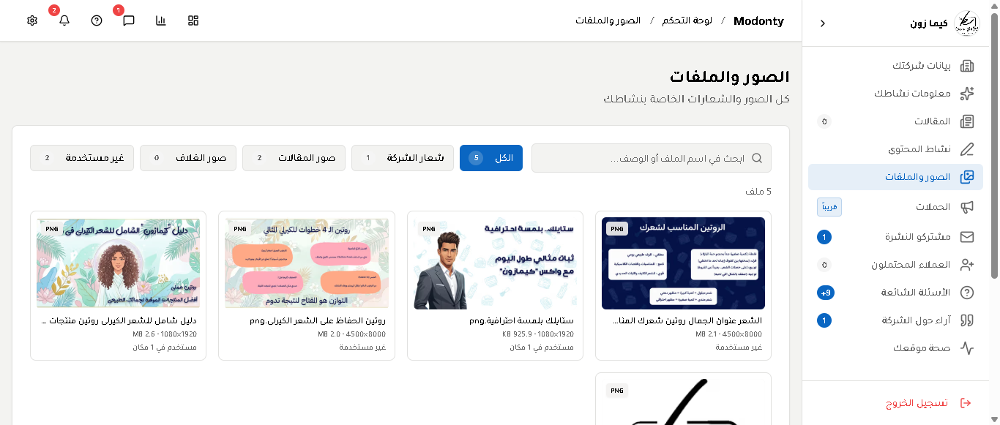
- ١أزرار فوق المعرضللتنقّل السريع: الكل · شعار شركتك · صور موجودة في مقالات · صور غلاف · صور غير مستخدمة.
- ٢تحت كل صورة معلومات: اسمها، حجمها، وفين متستخدمة (لو غير مستخدمة بتظهر علامة).
٩ الإحصائيات ⭐
دي أهم صفحة عندك. هنا تفهم زوارك فعلاً: مين هم، إمتى بيدخلون، إيش بيقروا، وإيش يحبّوا أكثر. والأحسن: في آخر الصفحة "توصيات جاهزة" — مودونتي يقول لك بنفسه إيش الأفضل تعمله الفترة الجاية.
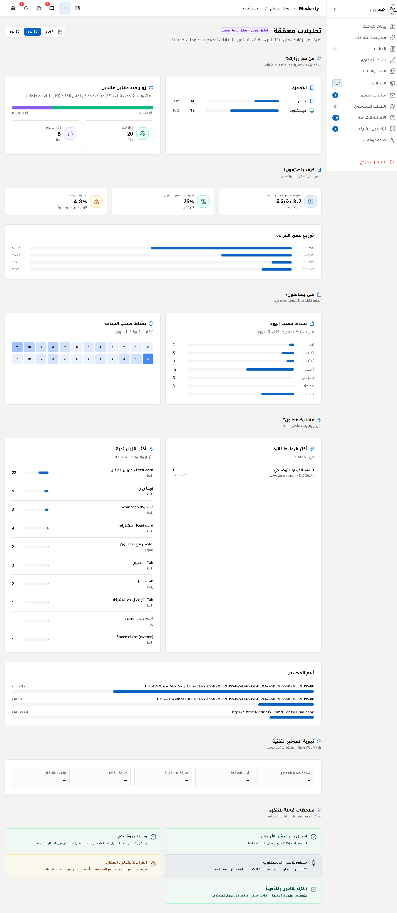
١٠ صحة موقعك ⭐
تخيّل إنك بتاخد سيارتك للفحص الدوري. هنا نفس الفكرة — مودونتي بيفحص موقعك ويعطيك تقرير: إيش شغّال تمام وإيش محتاج تصليح. النتيجة درجة من ١٠٠ زي درجة الامتحان.
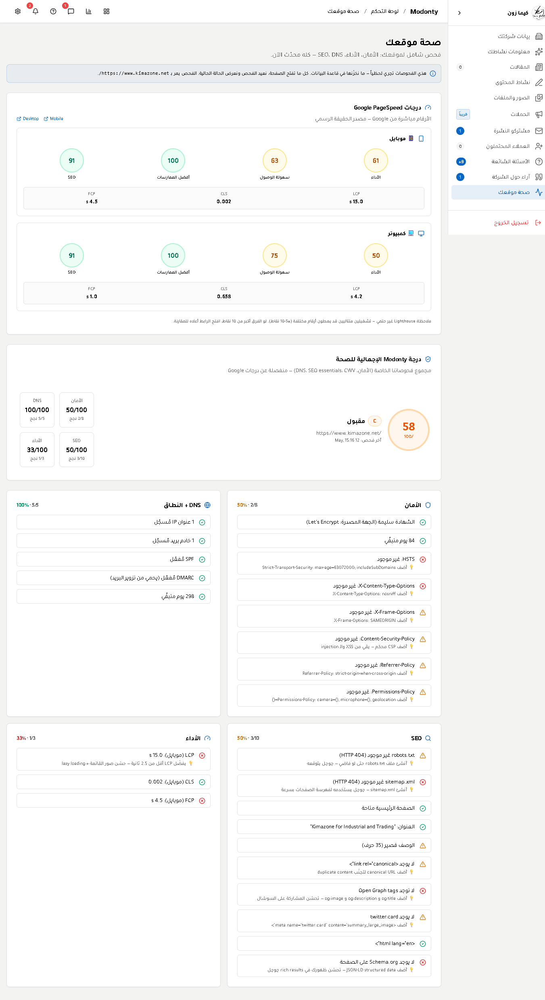
- ١سرعة موقعك على جوجلأرقام رسمية من جوجل نفسه. زي اختبار سرعة الإنترنت بس لموقعك. كل ما الرقم أعلى كل ما موقعك أسرع.
- ٢درجة مودونتي العامةالدرجة الإجمالية من ١٠٠. لو فوق ٨٠ موقعك ممتاز.
- ٣قائمة بالتفاصيلقائمة باللي تمام (علامة خضراء) واللي ناقص (علامة برتقالية). كل بند مكتوب بكلام واضح.
١١ اللي اشتركوا في نشرتك
في موقعك صندوق "اشترك معنا للحصول على أحدث المقالات". أي شخص يكتب إيميله هناك بيظهر هنا. ده جمهورك المخلص — اللي عاوز يسمع منك.
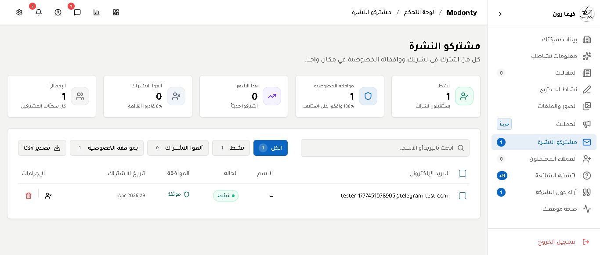
- ١٥ كروت بأرقامك: نشط (لسه مشترك) · وافق على الخصوصية · اشترك هذا الشهر · ألغى · الإجمالي.
- ٢زر "تصدير CSV"بينزّل كل القائمة كملف Excel — تقدر تستخدمه في أي برنامج إيميل عندك أو ترسل لهم عروضك.
١٢ الزوار اللي ممكن يصيروا عملاء
مش كل من يدخل موقعك مهتم. بس فيه ناس بتدخل صفحات كثيرة، تقعد وقت طويل، وتضغط أزرار. هؤلاء "محتملين" — يعني قريبين يصيروا عملاء. هنا تشوفهم وتعرف مين الأحرص.
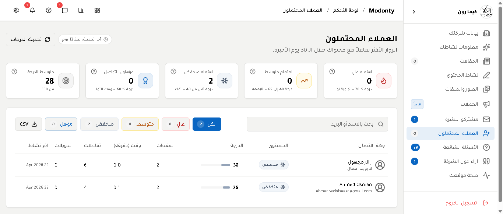
- ١كل واحد له درجة: عالي (الأقرب للشراء) · متوسط · منخفض · جاهز للتواصل (ترك إيميل أو رقم).
- ٢تفاصيل كاملة لكل واحد: كم صفحة دخل، كم وقت قعد، كم زر ضغط، وآخر مرة دخل الموقع.
١٣ أسئلة من زوارك
لو زائر دخل موقعك وحب يسأل سؤال (مثلاً: "كم سعر الخدمة؟" أو "هل تشحنوا للسعودية؟") — السؤال يجي هنا. ترد بكلمتين، والرد يوصله إيميل بشكل تلقائي. ما تحتاج تفتح إيميلك.
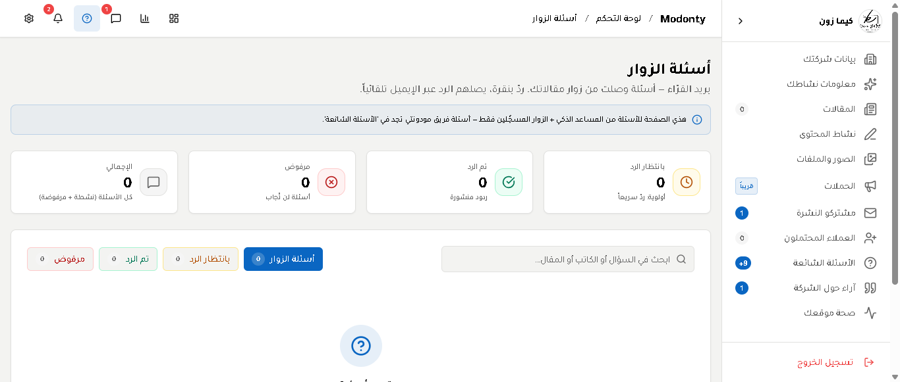
١٤ تعليقات الناس على مقالاتك
أي زائر يكتب تعليق تحت أي مقال — التعليق ما يظهر مباشرة. لازم يجي هنا، تشوفه، وتقرّر: ينشر أو لا. وتقدر ترد عليه بنفسك. ده يخليك في السيطرة وما يطلع شي ما تحبه.
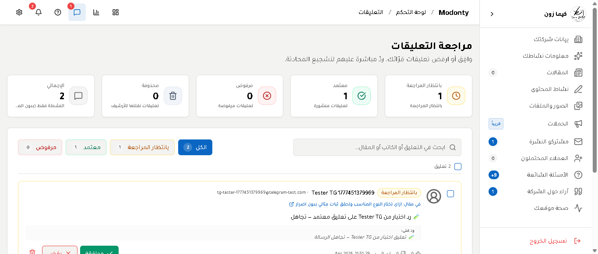
١٥ تقييم زوارك لشركتك
في صفحتك العامة فيه قسم "شاركنا رأيك". أي شخص يكتب رأيه عن شركتك يجي هنا. نفس الفكرة: ما يظهر شي إلا بعد ما توافق عليه. تقييماتك الحلوة تظهر للعالم وتبني سمعتك.
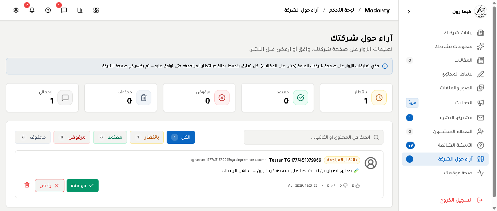
١٦ أسئلة وإجابات جاهزة لمقالاتك
فريقنا يفكّر بدل عنك: "إيش الأسئلة اللي زائرك ممكن يسألها عن مقال معيّن؟" يجهّز السؤال والإجابة، ويعرضهم هنا. توافق بنقرة، ويظهروا في نهاية المقال. الفايدة: زائرك يلاقي إجاباته بسرعة، وجوجل يحب الصفحات اللي فيها أسئلة وإجابات.
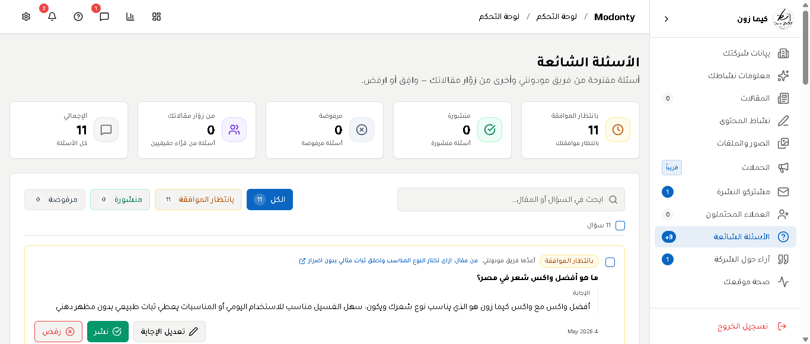
١٧ إعدادات حسابك
كل اللي يخص حسابك في مكان واحد: باقتك، تنبيهاتك، وكلمة سرّك. صفحة بسيطة بتدخلها مرة وحدة وتظبط فيها كل شي.
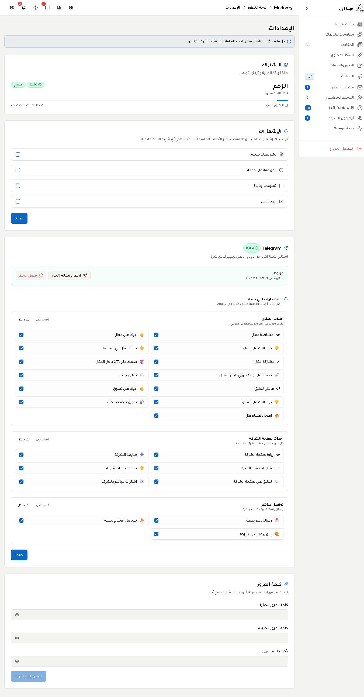
- ١باقتكاسمها، سعرها، وامتى تنتهي. لو قاربت تنتهي بنخبّرك قبلها.
- ٢التنبيهاتاختر متى نخبّرك: مقال جديد، تعليق، رسالة دعم، إلخ. علّم اللي تبيه، شيل علامة اللي مش مهم.
- ٣اربط Telegramلو تبي تنبيهات لحظية على جوّالك (مثلاً: زائر دخل صفحتك دلوقتي). دقيقة وحدة وانتهيت.
- ٤غيّر كلمة المرورفي آخر الصفحة. ينصح تغيّرها كل ٦ أشهر.
١٨ رسائل من زوارك
في موقعك صفحة "تواصل معنا". أي شخص يكتب رسالة من هناك بتجي لك هنا. ترد بنقرة، والرد يوصله إيميل بشكل تلقائي. أبسط نظام دعم عملاء — بدون ما تحتاج تفتح إيميلك.
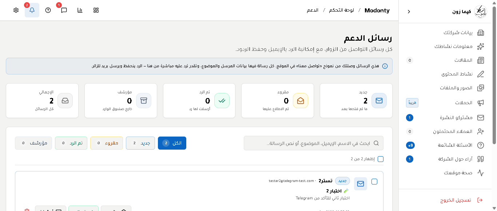